Recent advances in General Text-to-3D (GT23D) have been
significant. However, the lack of a benchmark has hindered
systematic evaluation and progress due to issues in datasets
and metrics: 1) The largest 3D dataset Objaverse suffers
from omitted annotations, disorganization, and low-quality.
2) Existing metrics only evaluate textual-image alignment
without considering the 3D-level quality. To this end, we
are the first to present a comprehensive benchmark for
GT23D called GT23D-Bench consisting of: 1) a 400k high fidelity and well-organized 3D dataset that curated
issues
in Objaverse through a systematical annotation-organize filter pipeline; and 2) comprehensive 3D-aware
evaluation
metrics which encompass 10 clearly defined metrics thoroughly accounting for multi-dimension of GT23D.
Notably, GT23D-Bench features three properties: 1) Multimodal
Annotations. Our dataset annotates each 3D object with
64-view depth maps, normal maps, rendered images, and
coarse-to-fine captions. 2) Holistic Evaluation Dimensions. Our metrics are dissected into
a) Textual-3D Alignment measures textual alignment with multi-granularity visual 3D representations; and b) 3D
Visual Quality which
considers texture fidelity, multi-view consistency, and geometry correctness. 3) Valuable Insights. We
delve into the
performance of current GT23D baselines across different
evaluation dimensions and provide insightful analysis. Extensive experiments demonstrate that our annotations
and
metrics are aligned with human preferences.
3D Datasets
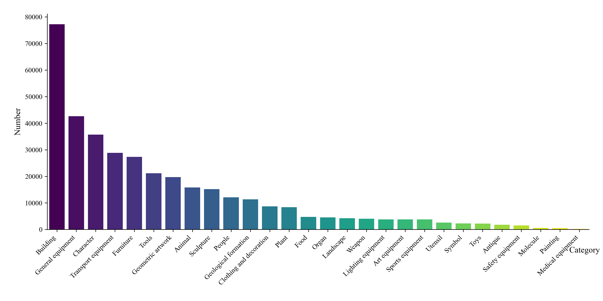
Figure 1. Subcategory distribution visualization and visual
examples of our 3D dataset.
Multi Modal Annotations
Our dataset presents a comprehensive captioning approach
that progresses from coarse to fine levels of detail compared
to existing annotated datasets.
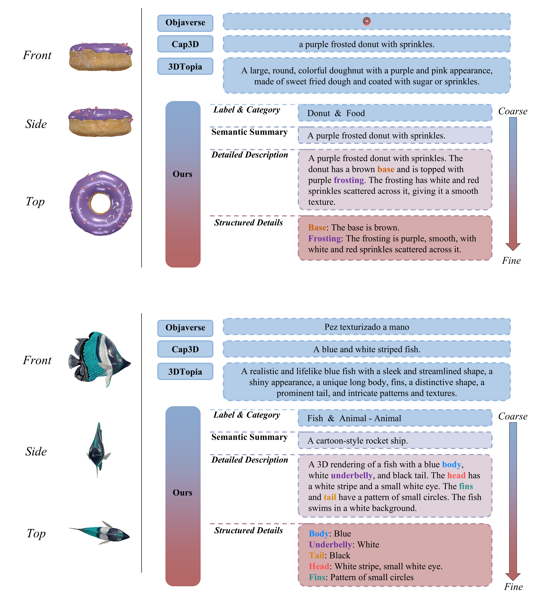
Figure 2. Comparison of Captions Across Different Datasets.
Compared to other existing datasets, our GT23D-Bench offers more
comprehensive captions ranging from coarse to fine-grained levels.
Statistic information of our 3D dataset:
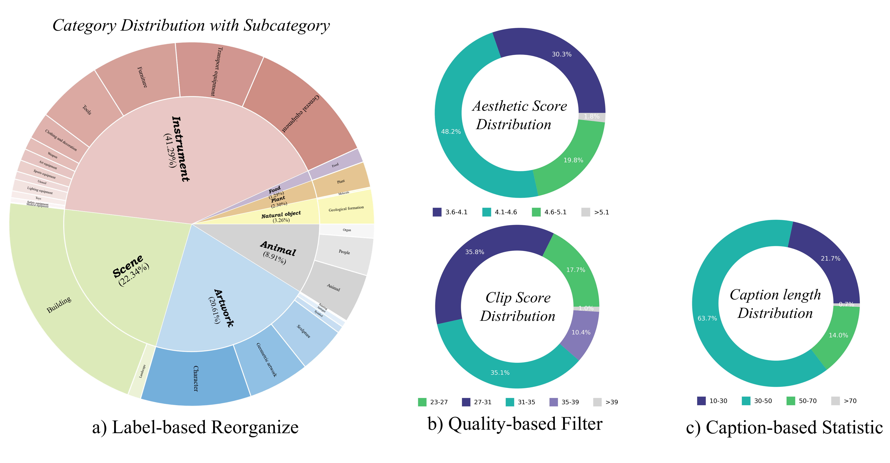
Figure 3. Visual Comparison of SeMv-3D Fine-tuned in Different
Dataset.
Quality-based Filter
The data filtering process involved multiple stages:
Figure 4. Illustration of Quality-based Filter process details.
3D-Aware Evaluation Metric
As seen, our scores remain more consistent with visual quality in different evaluation
dimensions compared to Clip and Aesthetic.
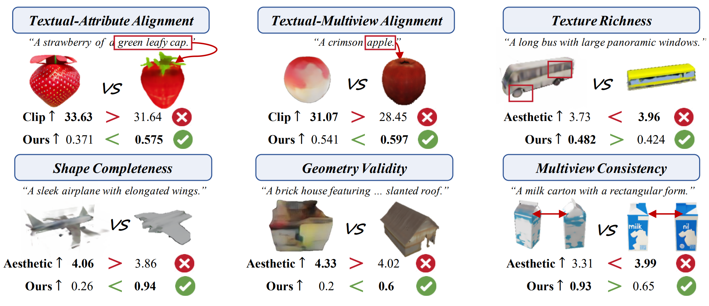
Figure 5. Visual analysis comparing GT23D metrics including Clip
Scores (Clip), Aesthetic Scores (Aesthetic), and Ours considering
different evaluation dimensions. Our evaluation scores are better consistent with visual results in each
evaluation dimension.
The existing GT23D model displays the generated 3D objects as shown in the figure below:
Point-E
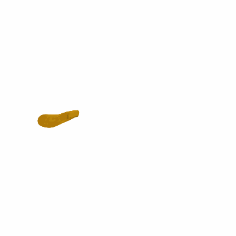
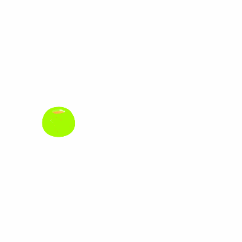
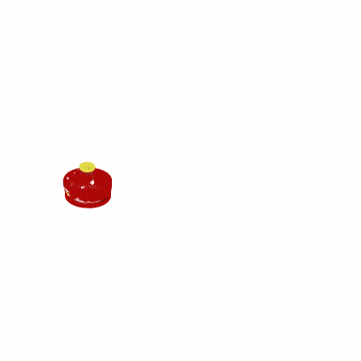
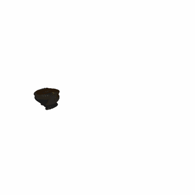
Shape-E
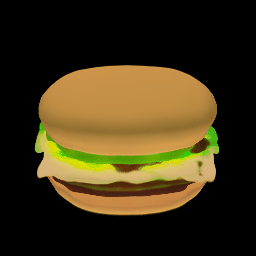
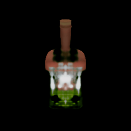
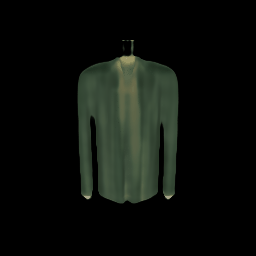
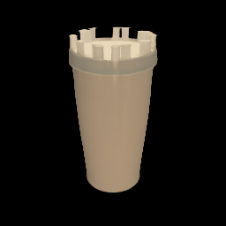
VolumeDiffusion
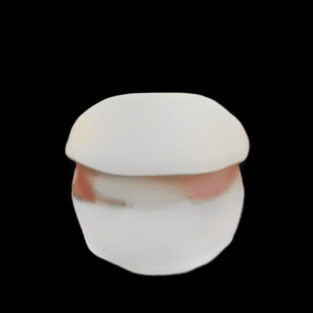
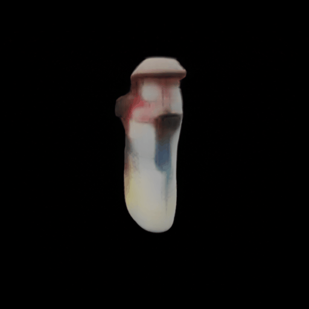
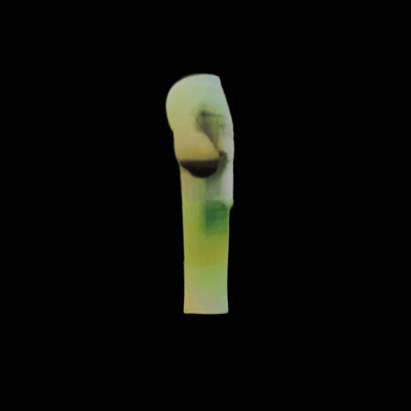
3DTopia
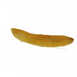
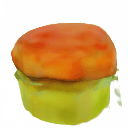
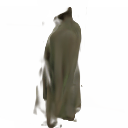
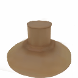
SeMv-3D
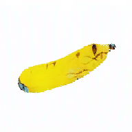
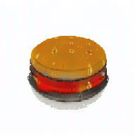
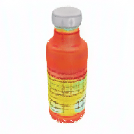
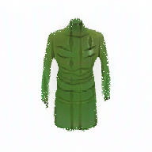
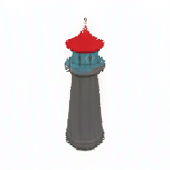
MVDream
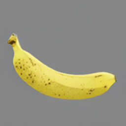
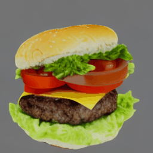
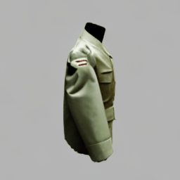
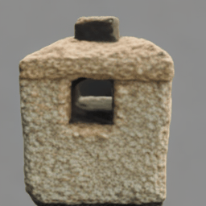
We conduct a comprehensive
evaluation of existing GT23D models using our GT23D-Bench metrics from six main dimensions containing 10
metrics in total.
Figure 6. Plot visualization of quantitative comparisons on GT23D
baselines using metrics of GT23D-Bench across four content categories.
3D Objects' Comprehensive Display
RGB Display
Depth Display
BibTeX
@article{su2024gt23d,
title={GT23D-Bench: A Comprehensive General Text-to-3D Generation Benchmark},
author={Su, Sitong and Cai, Xiao and Gao, Lianli and Zeng, Pengpeng and Du, Qinhong},
journal={arXiv preprint arXiv:2412.09997},
year={2024}
}


.gif)
.gif)
.gif)
.gif)
.gif)
.gif)
.gif)
.gif)
.gif)
.gif)
.gif)
.gif)
.gif)
.gif)
.gif)
.gif)
.gif)